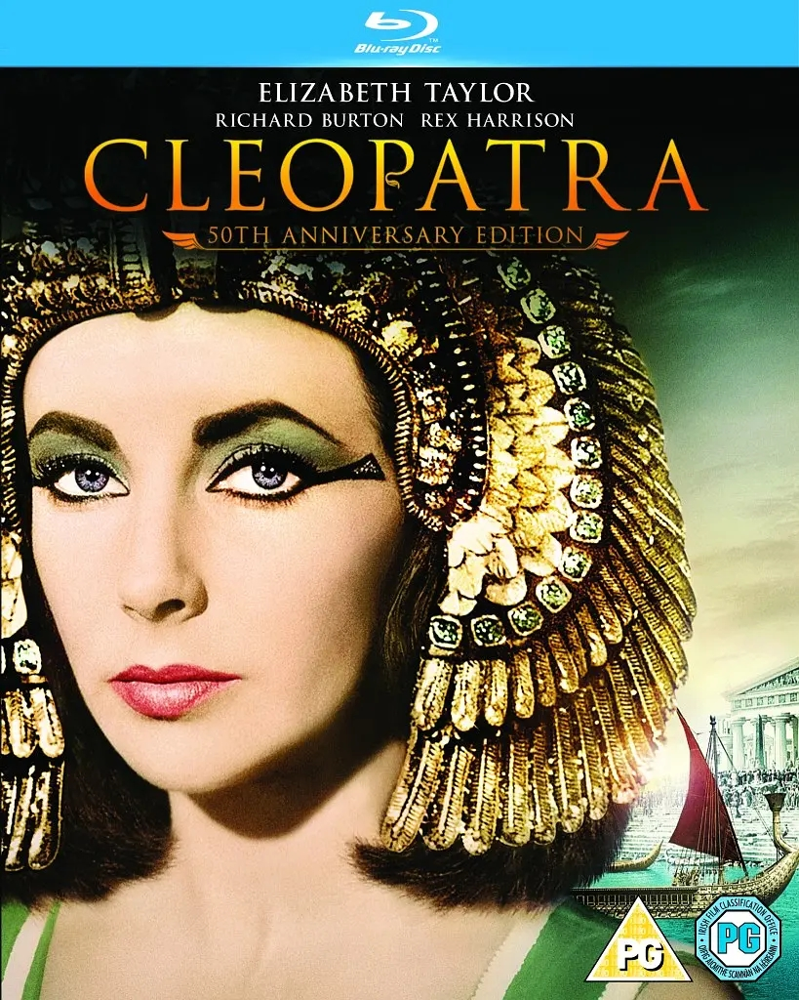

《羊群》讲述了一个悲伤的故事，居住在土耳其北部山区的库尔德游牧民，唯一的生活来源就是羊群， 每月剪羊毛派人固定送去遥远的中部大城市安卡拉卖钱，所得的收入再在安卡拉买一些生活必须品带回来，游牧民们从来不下山， 因为他们不仅要看守自己的羊群，而且还要提防不时来骚扰的土匪，久而久之他们就像生活在一个与外界隔绝的世界里一样， 已经很难适应山下的生活了……本片以现实主义的手法描绘了土耳其山区游牧人民的生活现状，精湛的摄影和独特的视角揭示城市物质生活的诱惑对人心灵的侵害， 表现现代文明与传统民族文化之间的冲突，以感人的悲情故事告诉观众不要在物欲的诱惑中迷失自己，而应该坚持内心的那片纯洁。影片中的哑女伯蕾凡正是纯洁和美好的象征。
八岁的墨曼（Mohsen Ramezani）是盲人学校里最用功的孩子，视障也没能妨碍他对美妙的自然万物的独特感受力， 他时常虔诚地用双手去找寻心中的真主安拉。然而，命运却喜欢同他开玩笑，母亲离去多年后，父亲（Hossein Mahjoub） 为了再娶，决定甩掉他这个拖油瓶。父亲先把墨曼从盲人学校接回家，在家乡，墨曼从奶奶（Salameh Feyzi）与两个妹妹那里，得到真挚的爱， 感受到了秀美风景里所藏的快乐，快乐总是暂时的，他接着就被父亲连拖带拽送到了一个盲人木匠处当学徒……
 生活在沙特阿拉伯首都利雅得郊区的十岁小女孩瓦嘉达（瓦德·穆罕默德 Waad Mohammed 饰），性格乐观开朗，活力四射。
虽然她生活的环境传统保守，但小瓦嘉达不仅穿被老师明令禁止的牛仔裤板鞋，还热衷听摇滚乐。一日，瓦嘉达和邻家男孩阿布杜拉（Abdullrahman Al Gohani 饰）打了一架后，
刚巧看见一辆崭新的绿色自行车正在售卖。从此，瓦嘉达满脑子都是这两漂亮洋气的自行车，梦想有一天能买下它跟阿布杜拉来一场比赛。然而瓦嘉达的妈妈（黎姆·阿杜拉 Reem Abdullah 饰）却极力反对这件事。
因为根据瓦哈比派的教义，女性是不允许骑自行车的，特别是未婚少女。倔强的瓦嘉达只得偷偷的想办法自己筹钱。她在学校努力贩卖自制的小商品，又报名参加了自己一无所知的可兰经有奖背诵比赛。
然而社会约束和宗教束缚却始终阻碍着瓦嘉达，难道她就只能屈服于现实么？
生活在沙特阿拉伯首都利雅得郊区的十岁小女孩瓦嘉达（瓦德·穆罕默德 Waad Mohammed 饰），性格乐观开朗，活力四射。
虽然她生活的环境传统保守，但小瓦嘉达不仅穿被老师明令禁止的牛仔裤板鞋，还热衷听摇滚乐。一日，瓦嘉达和邻家男孩阿布杜拉（Abdullrahman Al Gohani 饰）打了一架后，
刚巧看见一辆崭新的绿色自行车正在售卖。从此，瓦嘉达满脑子都是这两漂亮洋气的自行车，梦想有一天能买下它跟阿布杜拉来一场比赛。然而瓦嘉达的妈妈（黎姆·阿杜拉 Reem Abdullah 饰）却极力反对这件事。
因为根据瓦哈比派的教义，女性是不允许骑自行车的，特别是未婚少女。倔强的瓦嘉达只得偷偷的想办法自己筹钱。她在学校努力贩卖自制的小商品，又报名参加了自己一无所知的可兰经有奖背诵比赛。
然而社会约束和宗教束缚却始终阻碍着瓦嘉达，难道她就只能屈服于现实么？ 52岁的凯撒（雷克斯•哈里森 Rex Harrison 饰）以罗马执行官的身份驾临埃及，为了解决王室姐弟争位的事端。皇姐克里奥佩特拉（伊丽莎白•泰勒 Elizabeth Taylor 饰）美艳绝伦， 凭借自身的魅力和政治手腕，迅速让凯撒拜倒在她的石榴裙下，不但获得了对埃及的统治权，而且还以美貌征服了罗马。克氏与凯撒完婚后，为其产下一子，深得凯撒喜欢，被立为继承人。 但此事引起了凯撒手下大将安东尼（理查德•伯顿 Richard Burton 饰）与屋大维（罗迪•麦克道尔 Roddy McDowall 饰）的不满。在凯撒遇刺驾崩之后，安东尼接掌了罗马的统治权，但他同样无法抵挡克氏的绝世美貌。 当安东尼彻底沉溺于暴风雨般爱情的时候，身在罗马的屋大维已经吹响了夺权的号角……
来自印度北方小镇的苏丹遇见了摔角教练的女儿，苏丹为了心仪女孩，不仅开始学起摔角，在短时间内就获得地方冠军，展现了他的决心和天分。他不但娶得美人归，还和妻子一起代表印度参加奥运， 但就在苏丹获得奥运金牌的同时，他却因为骄傲自大而失去了挚爱的家庭，唯一能赢回妻子芳心的办法，就是站回属于他的舞台。